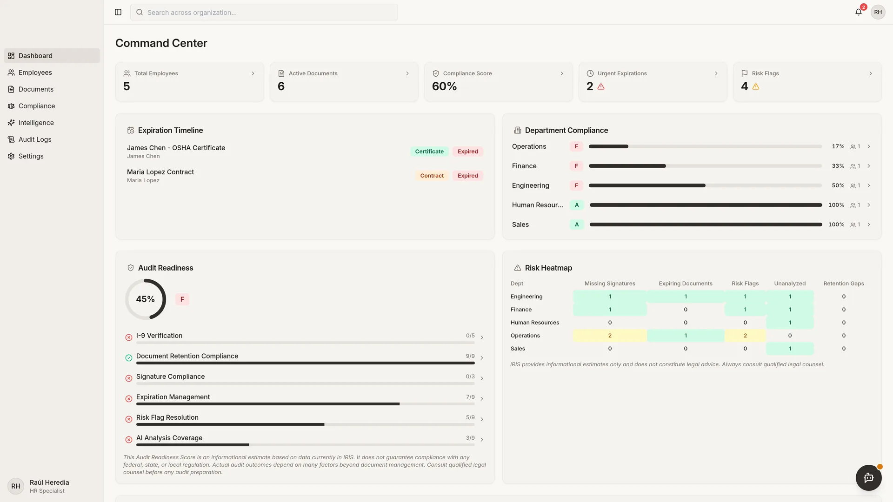
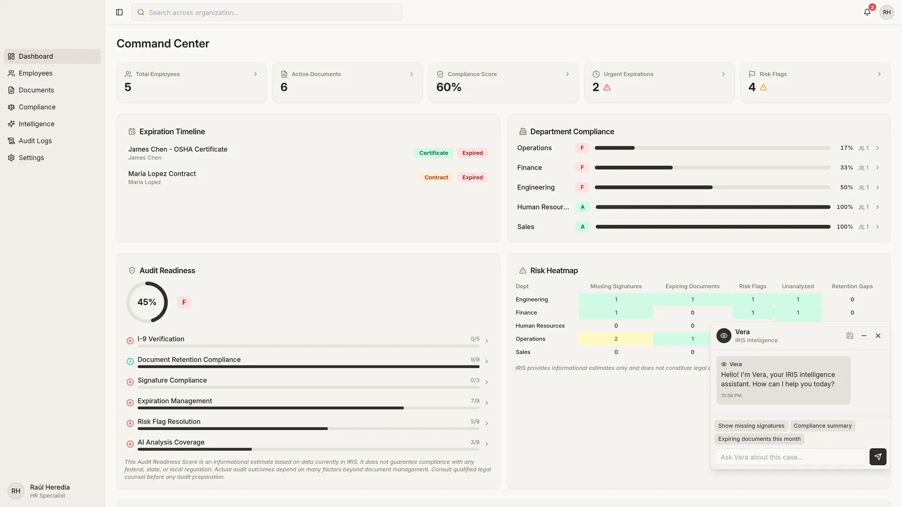
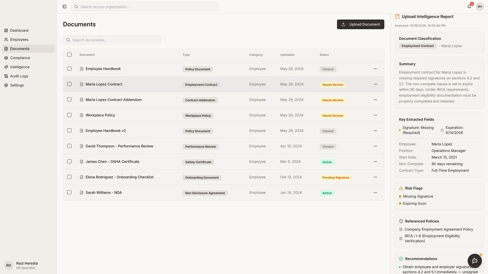
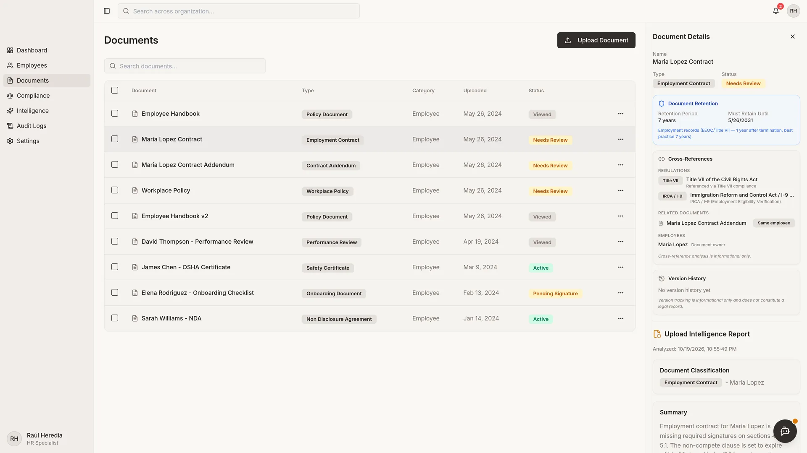
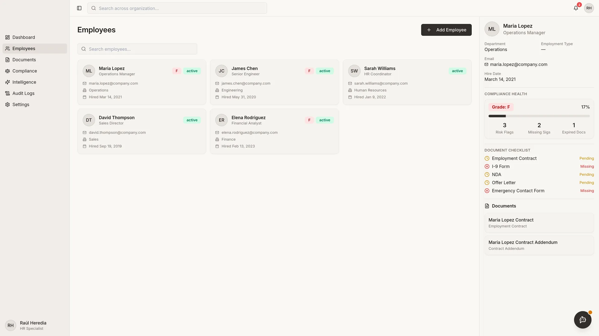
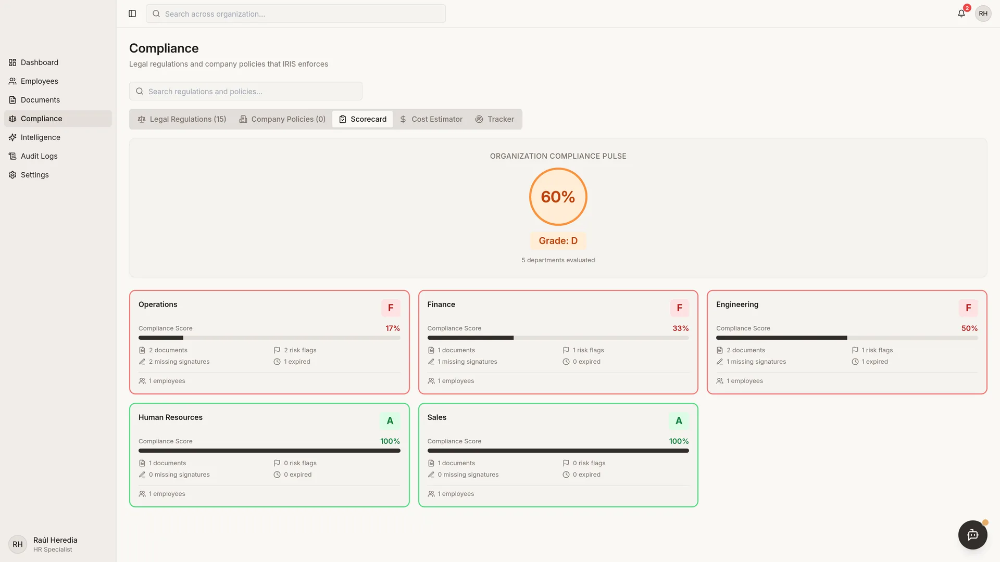
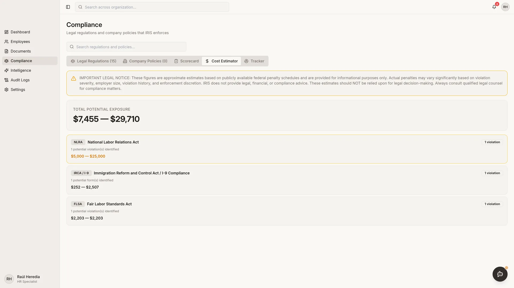
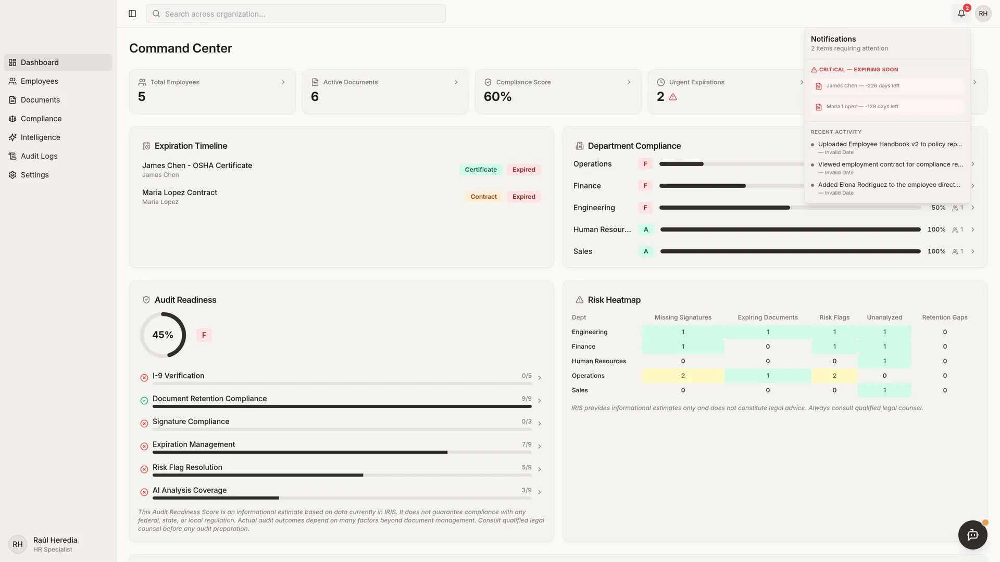

Self-directed project | Prototype
IRIS: Conversational HR Document Intelligence
What if HR could ask its documents a question and get an answer that cites the law?
IRIS is an HR app that lets HR teams have a conversation with their own documents. Instead of digging through files, they ask a question and get an answer. Vera, the AI assistant inside IRIS, also works in the background: she catches discrepancies, missing or incomplete documents, and items about to expire that could lead to a fine, and she cites the law behind what she says.
In short
- Problem: HR teams search files by hand and miss expired or missing documents that can lead to fines.
- My role: I designed and built it myself, start to finish.
- Result: a working prototype where HR asks questions in plain language, gets answers that cite the law, and a person makes the final call.
The Problem
HR teams manage large volumes of documents, such as I-9s, policies, certifications, and payroll records, that must line up with many federal labor laws and with retention rules. Finding an answer means searching by hand, and gaps, conflicts, and deadlines are easy to miss.
My Role
Solo designer and builder. I designed and built IRIS as a self-directed project: the HR app, Vera, the AI assistant, and the document analysis service behind them.
The Approach
Technical details (for technical reviewers)
- Chat with your documents. HR asks Vera questions in a chat. Vera answers using the workspace: documents, employee records, company policies, and regulations, and she cross-references them against the law.
- Answers that cite the law. Each answer cites the relevant law section (for example, "Under FLSA Section 7(a)..."), explains the potential penalty, and gives a recommendation.
- Expiration warnings. IRIS reads the expiration date from each document and tracks items that expire. Anything expiring within 90 days goes on a timeline, marked critical when it is 30 days out or already expired, and as a warning at 60 days, so HR can act before a lapse turns into a fine.
- Missing and incomplete documents. Each document is checked for problems such as a missing required signature, a missing required clause, or incomplete reporting. Vera also flags certifications an employee claims (such as a commercial driver's license) with no document on file, I-9s not completed within 3 business days, company policies that conflict with the law, and conflicts between documents.
- What is at stake. When Vera raises a concern, she names the law, states the potential penalty or fine, and recommends a next step. A compliance cost estimate adds up possible penalty ranges by law, based on the issues found in the documents.
- Broad legal coverage. Documents are checked against 15 or more federal laws, including FLSA, OSHA, FMLA, ADA, Title VII, IRCA (I-9), HIPAA, COBRA, ERISA, ADEA, NLRA, WARN, GINA, and USERRA, plus state law. Each document gets a consistent result: document type, signature status, expiration date, risk flags with severity and the regulation involved, a confidence score, a summary, and recommendations.
- Retention rules with a cited basis. IRIS calculates how long each document must be kept. The periods come from fixed rules, not AI, and each cites its source, for example OSHA records (29 CFR 1904.33) at 5 years, I-9 and FMLA records at 3 years, ERISA and HIPAA at 6 years, and a 7-year default under EEOC and Title VII.
- Dashboards and audit trail. A compliance scorecard, risk heatmap, expiration timeline, regulatory tracker, and audit readiness view, plus document versions and audit trails.
- Careful wording. The AI is told never to speculate or assert illegality. It uses safe phrasing such as "potential discrepancy detected", so it supports human judgment instead of acting like a final legal opinion.
- Fails safely. If an analysis cannot finish, the result says "Manual Review Required" with a critical flag rather than failing silently.
Screenshots
Captured from a local run with fictional seed data only. No real people or documents.
















The Result
A working prototype of the HR app, the Vera assistant, and the document analysis service. It is not a finished product and not legal advice. Every answer and alert is meant for a person to review.
What this shows
Designing conversational AI for a high-stakes, regulated setting: plain-language answers that show their sources, proactive help instead of only reactive search, fixed rules where accuracy matters, honest language, and people in charge of the final decision.